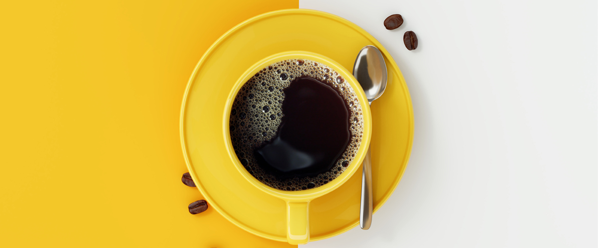
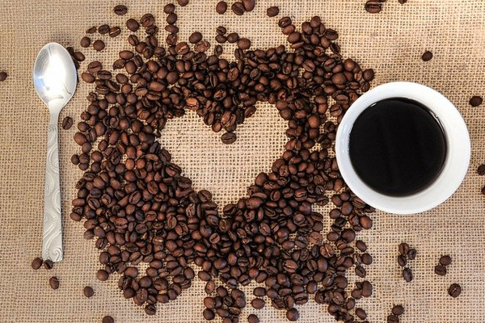
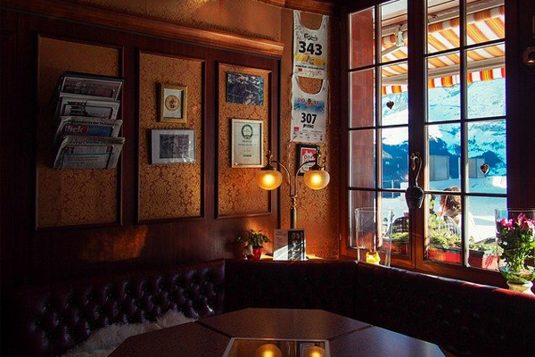
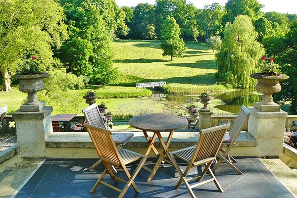
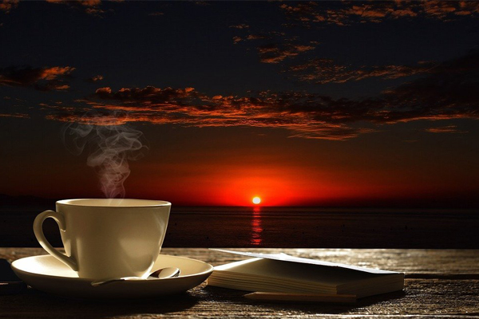

홈 > 회사소개 > 카페 스토리웨이
카페 스토리웨이
카페 스토리웨이 소개
최상의 원료, 최적의 로스팅을 통한 스페셜 티커피
-
- 최상의 원료
- 카페 스토리웨이는 알맞은 일조량과 풍부한 화산 토양, 쾌적하고 서늘한 기온으로 생두 재배를 위한 완벽한 미세 기후 속에서 만들어진 원두를 사용합니다.
- 최적의 블랜딩
- 단일 농장에서 수급한 고품질의 생두를 블랜딩하여, 견과류와 곡물류의 향미와 다크초코릿과 같은 후미, 카라멜 단맛의 여운이 길어 커피의 맛과 향이 풍부합니다.
- 최적의 로스팅
- 중간 강도의 풀-시티로 로스팅한 인도네시아 만델링 Grade 1은 고소한 향이 강하고 단맛은 비교적 적지만 전체적으로 부드럽고 풍부한 바디감을 느낄 수 있습니다.
카페 스토리웨이 브랜드 컨셉 및 전략
환경을 생각하는 카페 스토리웨이
-

- 친환경 원두 사용을 통한 환경보호 실천
- 카페스토리웨이는 더욱 탄탄한 제품력 구축을 위해 친환경 RA원두와 새로운 커피머신까지 갖춰 보다 좋은 의미와 맛의 커피를 고객에게 제공하고자 합니다. 카페 스토리웨이는 다음 세대를 위해 레인포레스트 인증받은 원두를 사용합니다.
-

- 철도 이용객을 위한 고객중심서비스 제공
- 항상 고객의 입장에서 문제를 고민하고 실천하는 서비스 으뜸단이 될 수 있도록 적극 지원하겠습니다. 여행의 설렘과 편안한 휴식을 위한 공간으로 철도 이용고객에 편의를 제공합니다.
-

- 소비자 니즈를 반영한 제품 꾸준히 출시
- 모든 성공의 첫 걸음은 관심과 열정이라고 믿고 있습니다. 첫걸음을 시작하는 단계지만 분명히 이 관심과 열정으로 성공 할 수 있다고 생각합니다. 소비자의 니즈와 트렌드 변화에 발맞춰 지속적으로 새로운 시도를 하고 있습니다.
-

- 친환경 에코 브랜드를 통한 차별화
- 차별화는 고객에 대한 성실과 성의라고 생각합니다. 내 가족이 숨쉬는 공간에 손때가 묻어간다는 휴머니즘의 생각위에 트랜드와 실용성을 겸비한 디자인을 더하고 철도 고객 특성을 반영한 카페 브랜드, 통일된 브랜드 아이덴티티 확립을 통한 서비스를 제공합니다.